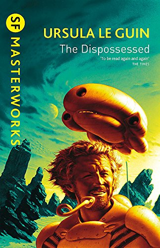

<div class=" mt-10 grid grid-cols-2 md:grid-cols-3 gap-2 items-center">
    @for(book of this.booksList$ | async ; track book.ISBN13){
        <!-- <div class="mb-5">
            
        </div> -->
        <app-minilibro [showedBook]="book"></app-minilibro>
    }@empty {
        <p>No se han encontrado LIBROS de esa categoria...intantalo de nuevo con otra</p>
    }
</div>

<!--
    modificar vista usando : 

    *ngIf ... ; else ===> @if(){....}@else{....} 
    *ngFor ... ===> @for (...){.....} usar observable libros con async 
-->

<!-- <div class="container">
    <div class="row" *ngIf="this.booksList.length !==0; else sinlibros">
        <div class="row">
                <div class="col-4" *ngFor="let book of this.booksList">
                    <app-minilibro [showedBook]="book"></app-minilibro>
                </div>
        </div>
    </div>
    
    <ng-template #sinlibros>
        <div class="row">
            <div class="col">
                <p>No se han encontrado LIBROS de esa categoria...intantalo de nuevo con otra</p>
            </div>
        </div>
    </ng-template>
</div>  -->


